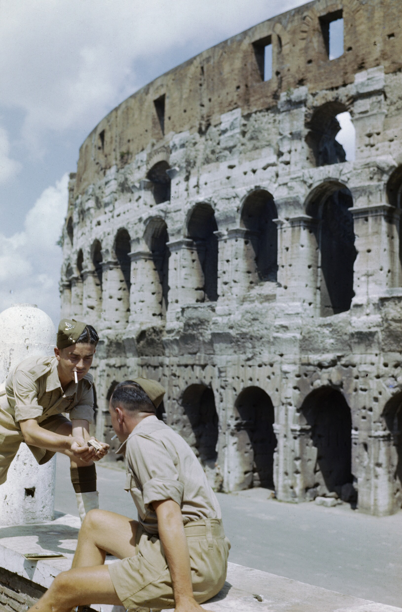
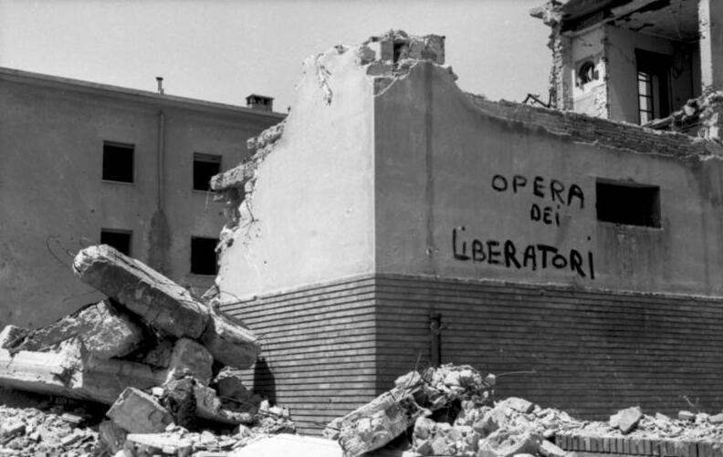
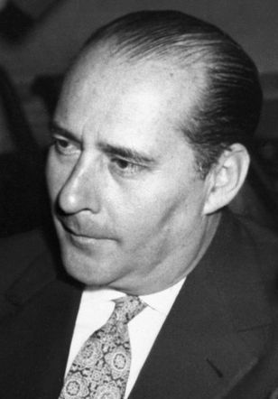
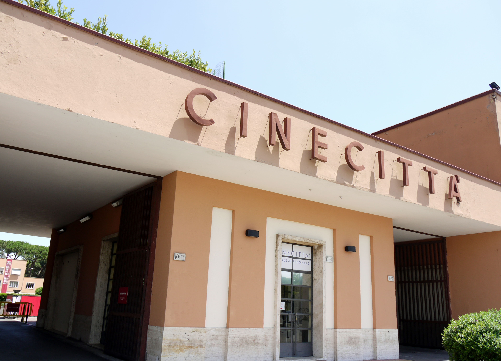
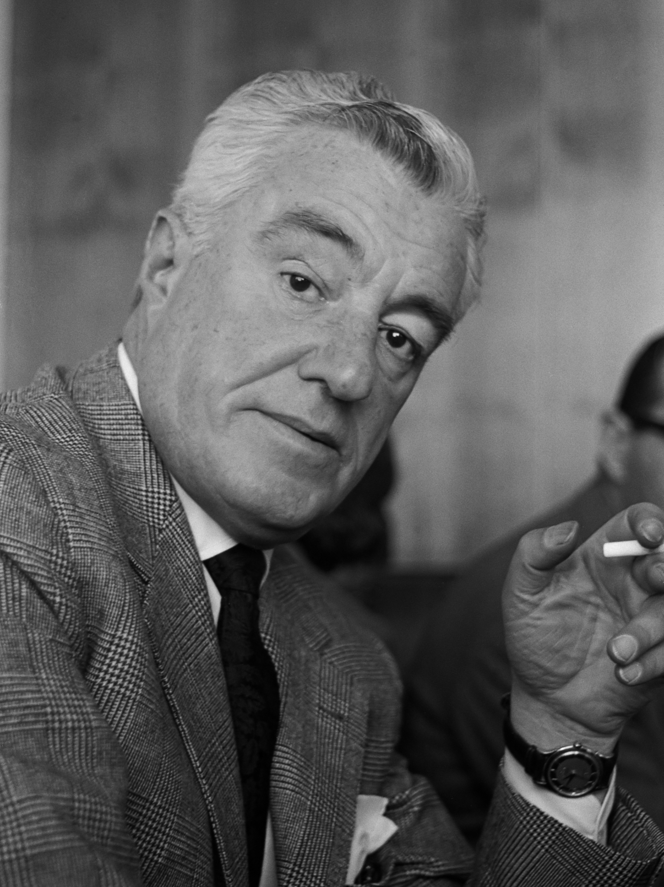
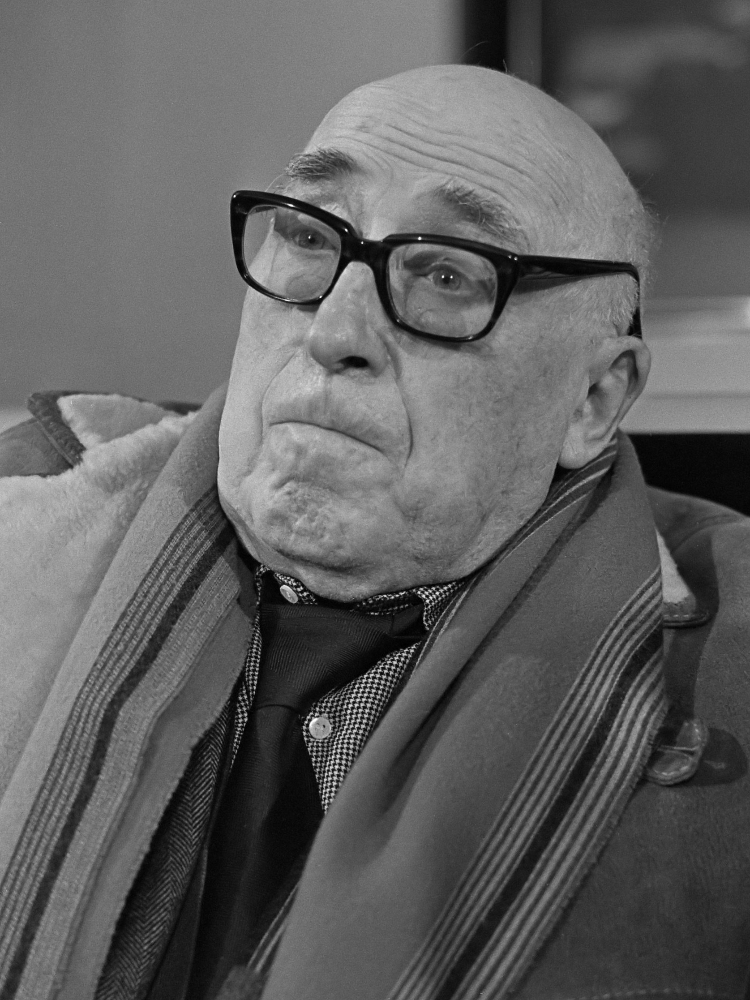
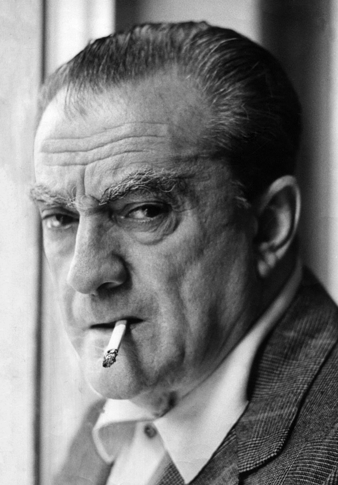
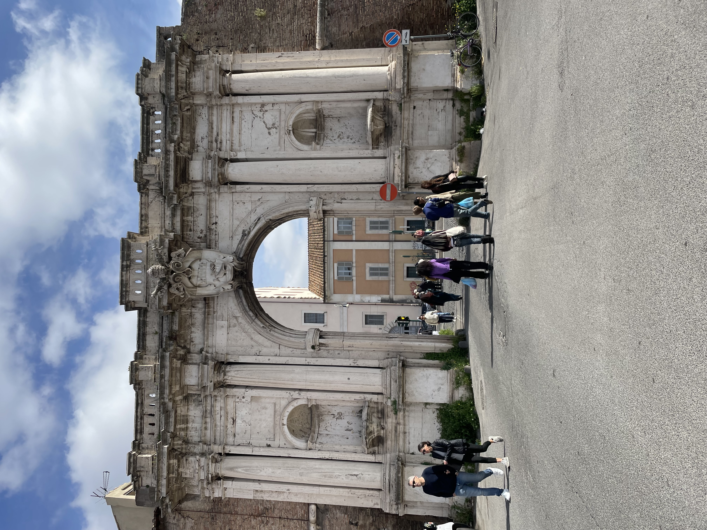

Wednesday · Film
(c. 1943–1952): streets after the studios go dark
Fascism collapsed, was bombed and then filled with refugees, and Italian filmmakers took cameras into ruined streets with and thin budgets. Critics later named the cluster — a fuzzy historians’ label for about a decade of films that treated occupation, unemployment, and ordinary faces as cinema’s subject.

{kind=link}
“” is a critics’ and historians’ name with fuzzy edges, not a membership card and not a single manifesto that every director signed. ’s (1943) is often cited as a precursor made under fascism; ’s (1945) is the usual wartime hinge that international audiences noticed; ’s (1948) and (1952) mark the postwar peak and late austerity. By the early 1950s the cluster was already sliding into comedy, melodrama, and what later writers called “.” , , and poverty stories were habits and pressures, not a checklist every film passed. filmmakers later claimed these films as ancestors; is a much later relative that also turned local streets into form — influence traveled, but Rome 1945 is not Taipei 1982. Film stills are usually still in copyright, so the pictures here are portraits, wartime exteriors, a later gate, and a free photograph, captioned as what they actually show. No AI people.
Select any words, or tap a dotted term.
- 1937–43 Cinecittà / white telephones Mussolini’s opens in 1937. Studio genres and “” comedies dominate; ’s (1943) already looks unlike that polish.
- 1943–45 War hinge Allied invasion of Italy, fall of fascism in the south, , liberation of the capital (June 1944). is damaged and later used as a displaced-persons camp.
- 1945–46 Open City / Paisan / Shoeshine ’s (1945) and (1946). ’s (1946). International festivals and critics begin to group the films.
- 1948 Bicycle Thieves / La Terra Trema ’s . ’s in Sicily with non-professional fishermen. defeat the Popular Front in Italy’s April elections — the political weather around the screens.
- 1948–50 Germany Year Zero / Miracle in Milan ’s (1948) in ruined Berlin. and ’s (1951) bends toward fable.
- 1952–55 Late edge / pink turn (1952) as late austerity. Commercial comedy and melodrama reclaim audiences; “” and later comedies inherit the street look without the same social bite. and move past the label.
Before
Fascist polish, Cinecittà, then rubble
Before critics had a word for , Italian screens had a studio habit. Under Fascism the state treated cinema as a prestige weapon. opened in 1937 on the southeastern edge of Rome as a modern factory for features, newsreels, and training. Much of what audiences bought was light: comedies and melodramas later nicknamed , after the pale prop phones that signaled luxury apartments and problems that could still be solved with charm. Directors such as Alessandro Blasetti had already mixed location work and populist history into the 1930s; himself made wartime documentaries and features inside the regime’s industry. The “before” is not a blank stage. It is a polished commercial cinema with a state roof over it, interrupted by war.
Material facts then broke the roof. Allied bombing damaged . After Rome’s liberation in June 1944, parts of the studio complex were used as a displaced-persons camp — refugees sleeping among sets while the commercial industry scrambled for stock, electricity, and money. German occupation of the capital (September 1943–June 1944), civil war in the north, black markets, and unemployment were not abstract themes. They were the streets filmmakers walked. When cameras left the soundstage, it was partly aesthetic argument and partly because the soundstage was wrecked, occupied, or unaffordable.

{kind=link}
Politics after liberation did not pause for art. and Communists competed to define the new republic; the April 1948 elections confirmed Christian Democrat dominance and narrowed the left’s path through institutions. Neorealist films were made inside that fight — sometimes with left sympathies, sometimes with Catholic producers, almost always with commercial distributors who still needed tickets sold. The “before” that matters for this lesson is therefore double: a fascist-era studio gloss, and a ruined, occupied, then contested city that made gloss hard to afford.
The era
A fuzzy decade: from Ossessione to Umberto D.
Historians usually open the cluster before the war ends. ’s (1943), shot while Fascism still held the peninsula, adapted ’s The Postman Always Rings Twice without securing the rights and filled the frame with sweat, roadside bars, and bodies that did not look like glamour. It is a precursor more than a membership card: melodrama and crime story, already allergic to studio polish. The international hinge arrives with ’s (1945), prepared as the Germans left and finished as Liberation Rome tried to eat and rebuild. and — professionals with Roman stage and comedy roots — play a widow and a priest inside a Resistance plot that felt to foreign viewers like newsreel heat. and a young were among those shaping the script. The film’s raw stock shortages and stolen electricity became legend; the useful fact is simpler: it showed occupation Rome as a place where people hid neighbors and died in streets that still looked like themselves.

{kind=link}
followed with (1946), six episodes climbing the peninsula with Allied soldiers and Italian civilians, and (1948), which moved the camera into ruined Berlin through a child’s errands and bad counsel. Together the three films are the critics still shelf as a set. Beside them, — already a star actor — directed (1946) about boys working American boots and falling into reformatory logic, then (1948), written with and others, in which a bill-poster’s stolen bicycle becomes a whole city’s indifference. ’s (1948) took non-professional fishermen in and Sicilian dialect onto the screen after . These titles do not share one producer or one manifesto. They share a few years, a preference for streets over telephone comedies, and a critical press eager to name what it was seeing.

{kind=link}
By the early 1950s the energy was already changing. and ’s (1951) tipped into fable; (1952) pushed austere observation of a pensioner’s rooms and a maid’s morning chores until even sympathetic producers flinched at the box office. Audiences drifted toward comedy and melodrama. Writers later coined for films that kept ordinary faces and outdoor light while sanding off the political grain. ’s early features and ’s first steps sit on that edge: still contiguous with documentary texture, already headed somewhere else. The era’s useful dates are therefore rough — c. 1943 to c. 1952 — not a union’s start and stop.
The field
Rossellini, De Sica–Zavattini, Visconti — and a wider crew
The field is wider than three auteurs. ’s (1949) packed melodrama and sex into rice fields and sold tickets. , , and others made dramas that critics sometimes pulled into the label and sometimes left adjacent. ’s face traveled farther than any theory pamphlet. Child performers and — as , as , as Umberto, ’s fishermen — are part of the industrial method, not folklore. ’s scripts, ’s collaborations, and ’s essays show that writing rooms mattered as much as handheld legend. Listing names is a way to refuse the lone-genius postcard.
Deepen first. braids a Resistance organizer, ’s , and ’s through German roundups and betrayal. ’s episodes refuse a single hero’s arc: Florence, the Po marshes, Sicily, a monastery — contact and miscommunication as the liberation advances. watches Edmund in a flattened Berlin where black-market teenagers and a former teacher replace any comforting moral map. Location noise, mixed casts, and a documentary adjacency are concrete choices: stay with a stairwell, a street arrest, a boy’s errand, until politics arrives as lived duration rather than speech.

.jpg){kind=link}
Deepen with second. ties kids’ labor for Allied boots to a justice system that breaks friendship. follows Antonio and across pawnshops, markets, churches, and police indifference after a bicycle theft that should be minor and is not. ’s stiff walk and ’s watching face are the film’s argument: unemployment is a route through a city, not a statistic. ’s later “” (published in Italian in 1952, in Sight and Sound in 1953) pushed the ethic further — stay with the everyday until it yields drama without inventing a spectacular plot. almost obeys that brief: a retired civil servant, a landlady’s eviction pressure, a dog named , and long ordinary mornings. Producers who had backed earlier hits found the severity hard to sell. That commercial flinch is part of how the era ends.

.jpg){kind=link}
Deepen third. ’s heat and roadside poverty announced a different body politics under Fascism. (1948), financed partly with left hopes, went to Sicily, used , and let dialect stand — then struggled with audiences who needed Italian subtitles for their own country’s speech. ’s later career (Senso, Rocco and His Brothers, The Leopard) is melodrama, history, and aristocratic Marxism more than street ; the early films remain the hinge that shows the label was always broader than Rome’s unemployed. ’s script work on , then Variety Lights and I Vitelloni, and ’s early documentaries and features, mark the exit ramps: same years, other destinations.

{kind=link}

{kind=link}
Elsewhere
Same years on other screens
Look out from Rome without turning the map into a worksheet. In the United States the still dominated world bookings through the late 1940s: star contracts, genre factories, and — after 1948’s Paramount Decree — a vertical integration problem that would later feed New Hollywood. That American industrial mode is what Italian neorealist films were not, even when won a special in 1950 and American critics took notice.
In Japan, Occupation and reconstruction framed studio work by Kurosawa, Ozu, Mizoguchi, and their peers — postwar cinema under different censors and different ruins. Mexico’s Golden Age () was still packing cinemas with Fernández, Infante, and Félix vehicles in the same calendar stretch. Britain’s documentary tradition and ’s wartime-to-postwar comedies treated ordinary speech and national recovery in another accent. Soviet screens continued ’s affirmative state aesthetic — a “realism” aimed at building consensus, not at following a stolen bicycle through indifferent police stations. These are contemporaneous facts, not assigned peer franchises.
What traveled from Italy was influence, not a template. and the future writers treated and as proof that cinema could think in long looks at contingent life; that argument helped feed practice a decade later. Much later still, filmmakers worked their own streets and histories under martial-law thaw — a related capsule on this site — after watching world cinema that included Italian titles among many others. Honest relatedness means saying the debt without pretending 1945 Rome and 1982 Taipei share a syllabus.
After
Comedy returns, pink neorealism, long afterlives
By the mid-1950s Italian commercial cinema had largely moved on. Comedies, melodramas, and prestige literary adaptations paid bills; “pink” variants kept outdoor light and vernacular faces while dropping much of the political severity. ’s La Strada (1954) and Nights of Cabiria (1957), ’s modern interiors, ’s historical spectacles, and later Pasolini’s own street ethics are aftermaths, not sequels with the same membership rules. Internationally the films never stopped circulating: festival retrospectives, Criterion restorations, film-school syllabi, and directors from France to Iran to Latin America who borrowed habits of location and non-professional casting. The label remains useful if you keep it fuzzy — a decade’s pressure and style, not a club that expired with a stamp.
A question
A question to keep asking
If a film follows a stolen bicycle, a pensioner’s morning, or a boy’s errand through ruined streets longer than a studio plot would usually allow, what social fact is it asking you to notice that a faster, prettier story would skip?
Fun fact
Cinecittà housed refugees among the sets
Mussolini opened — “” — outside Rome in 1937 as a flagship studio. Allied bombing damaged the complex; after liberation the Allies and relief agencies used parts of it as a displaced-persons camp. Refugees slept in sound stages and among props while Italy’s commercial film industry was still scrambling. The same years that critics later called neorealist were years when Europe’s largest studio lot was also emergency housing. The photograph here is a later entrance exterior, not a 1945 camp interior — the institutional fact is the point.